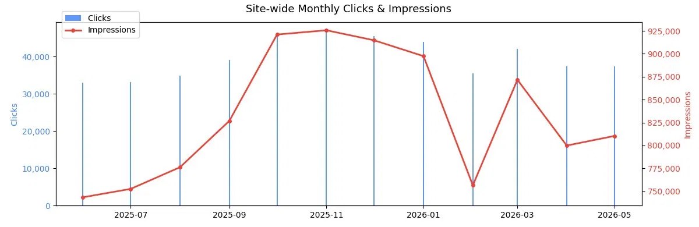
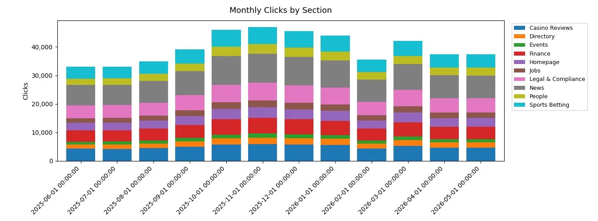

A 12-month export for a 50-page site with all dimensions enabled produces 1.7 million rows. Before any analysis is possible, these must be aggregated to monthly totals — but two common mistakes inflate your numbers if you're not careful.
SUM(clicks) / SUM(impressions).
SUM(position × impressions) / SUM(impressions).
SELECT DATE_TRUNC('month', date) AS month, SUM(clicks) AS total_clicks, SUM(impressions) AS total_impressions, ROUND( SUM(clicks) * 1.0 / NULLIF(SUM(impressions), 0) * 100 , 2) AS ctr_pct, ROUND( SUM(position * impressions) / NULLIF(SUM(impressions), 0) , 1) AS avg_position FROM gsc GROUP BY 1 ORDER BY 1
| Month | Total Clicks | Total Impressions | CTR % | Avg Position |
|---|---|---|---|---|
| 2025-06 | 33,071 | 743,472 | 4.45% | 21.9 |
| 2025-07 | 33,094 | 752,607 | 4.40% | 21.9 |
| 2025-08 | 34,943 | 776,258 | 4.50% | 21.8 |
| 2025-09 | 39,170 | 826,834 | 4.74% | 21.9 |
| 2025-10 | 46,017 | 921,005 | 5.00% | 22.0 |
| 2025-11 | 46,968 | 925,630 | 5.07% | 21.9 |
| 2025-12 | 45,586 | 914,684 | 4.98% | 21.9 |
| 2026-01 | 44,011 | 897,441 | 4.90% | 21.9 |
| 2026-02 | 35,568 | 756,457 | 4.70% | 21.9 |
| 2026-03 | 42,099 | 871,662 | 4.83% | 21.9 |
| 2026-04 | 37,365 | 799,892 | 4.67% | 21.8 |
| 2026-05 | 37,443 | 810,388 | 4.62% | 21.9 |

A publisher's sections behave very differently — News is driven by freshness cycles, Legal & Compliance by regulatory events, Casino Reviews by commercial intent. Aggregating everything together masks which sections are growing and which are declining.
LIKE '/news/%' pattern matching to bucket every URL into a named section. This pattern repeats in every subsequent query — learn it once, reuse everywhere.
SELECT DATE_TRUNC('month', date) AS month, CASE WHEN page = '/' THEN 'Homepage' WHEN page LIKE '/news/%' THEN 'News' WHEN page LIKE '/casino-reviews/%' THEN 'Casino Reviews' WHEN page LIKE '/legal-compliance/%' THEN 'Legal & Compliance' -- ... other sections ELSE 'Other' END AS section, SUM(clicks) AS total_clicks, SUM(impressions) AS total_impressions, ROUND( SUM(clicks) * 1.0 / NULLIF(SUM(impressions),0) * 100 , 2) AS ctr_pct, COUNT(DISTINCT page) AS pages_active FROM gsc GROUP BY 1, 2 ORDER BY 1, 3 DESC

| Section | Clicks | Impressions | CTR % | Avg Position | Pages Active |
|---|---|---|---|---|---|
| News | 7,067 | 163,445 | 4.32% | 21.2 | 11 |
| Legal & Compliance | 4,503 | 96,315 | 4.68% | 20.2 | 6 |
| Casino Reviews | 4,284 | 94,091 | 4.55% | 24.0 | 6 |
| Sports Betting | 4,160 | 95,937 | 4.34% | 24.2 | 6 |
| Finance | 3,982 | 86,372 | 4.61% | 23.9 | 6 |
| Homepage | 2,649 | 43,589 | 6.08% | 8.4 | 1 |
| People | 2,315 | 52,068 | 4.45% | 24.0 | 4 |
| Jobs | 1,689 | 40,575 | 4.16% | 23.5 | 3 |
| Directory | 1,499 | 48,191 | 3.11% | 23.9 | 4 |
| Events | 923 | 22,889 | 4.03% | 23.6 | 2 |
Knowing News got 7,985 clicks in May is meaningless without knowing it was 8,228 the month before. The LAG() window function looks back one row within each section's partition to calculate the difference automatically — no manual month-by-month comparisons needed.
PARTITION BY section, LAG would look at the previous row globally — comparing News in May to Finance in April. Partitioning resets the window per section so each section compares against itself.
WITH monthly_section AS ( SELECT DATE_TRUNC('month', date) AS month, CASE WHEN page LIKE '/news/%' THEN 'News' -- ... other sections END AS section, SUM(clicks) AS total_clicks, SUM(impressions) AS total_impressions FROM gsc GROUP BY 1, 2 ) SELECT month, section, total_clicks, LAG(total_clicks) OVER (PARTITION BY section ORDER BY month) AS prev_clicks, ROUND( (total_clicks - LAG(total_clicks) OVER (PARTITION BY section ORDER BY month)) * 100.0 / NULLIF( LAG(total_clicks) OVER (PARTITION BY section ORDER BY month), 0) , 1) AS clicks_mom_pct FROM monthly_section ORDER BY month DESC, total_clicks DESC
| Section | Clicks (May) | Clicks (Apr) | MoM % | Impressions (May) | Imp MoM % |
|---|---|---|---|---|---|
| News | 7,985 | 8,228 | −3.0% | 177,567 | +1.1% |
| Legal & Compliance | 5,036 | 4,974 | +1.2% | 105,009 | +1.6% |
| Sports Betting | 4,766 | 4,577 | +4.1% | 105,055 | +1.4% |
| Casino Reviews | 4,729 | 4,679 | +1.1% | 102,074 | +1.8% |
| Finance | 4,500 | 4,318 | +4.2% | 94,090 | +1.9% |
| Homepage | 3,046 | 3,057 | −0.4% | 47,503 | −0.2% |
| People | 2,672 | 2,646 | +1.0% | 57,404 | +2.4% |
| Jobs | 1,880 | 1,951 | −3.6% | 43,932 | +1.3% |
| Directory | 1,792 | 1,813 | −1.2% | 52,675 | +0.4% |
| Events | 1,037 | 1,122 | −7.6% | 25,079 | −0.3% |
Casino reviews and jobs content may need different mobile optimisation priorities than news. This query shows what percentage of each section's clicks come from each device — using a partitioned window SUM to calculate proportions within each section without a separate total query.
SUM(clicks) OVER (PARTITION BY section) gives the section total on every row, so you can divide each row's value by its own group total in a single pass — no self-join required.
SELECT /* section CASE WHEN here */ AS section, device, SUM(clicks) AS clicks, ROUND( SUM(clicks) * 100.0 / SUM(SUM(clicks)) OVER (PARTITION BY /* section CASE */) , 1) AS pct_of_section FROM gsc WHERE DATE_TRUNC('month', date) = (SELECT MAX( DATE_TRUNC('month', date)) FROM gsc) GROUP BY 1, 2 ORDER BY 1, 3 DESC
Clicks peaked at 46,968 in November 2025 — a 42% uplift vs the June low of 33,071. The pattern aligns with iGaming's sports betting season (NFL, Champions League). Content calendars should front-load production in September to capture this window.
Events is the only section showing both a clicks decline (−7.6% MoM) and flat impressions in May. Impressions holding while clicks fall suggests a CTR problem, not a visibility problem — title tags and meta descriptions for event pages are likely the lever to pull.
All sections sit at ~58–60% desktop, with Homepage the most mobile-leaning at 41% mobile clicks. This is characteristic of a B2B/trade publisher audience — industry professionals researching on work machines. Mobile optimisation matters but desktop UX remains the priority.
| Concept | Query | Why it matters |
|---|---|---|
DATE_TRUNC('month', date) | Q1–Q4 | Collapses daily rows into monthly buckets without losing date type |
SUM(clicks) / SUM(impressions) | Q1–Q3 | Correct CTR aggregation — never average the CTR column directly |
SUM(position × impressions) / SUM(impressions) | Q1–Q2 | Impression-weighted average position — more accurate than a mean |
NULLIF(expr, 0) | Q1–Q4 | Prevents divide-by-zero errors — returns NULL instead of crashing |
CASE WHEN page LIKE '/news/%' | Q2–Q4 | URL pattern matching to classify pages into content sections |
WITH monthly AS ( … ) | Q3 | CTE: names a sub-query for reuse — avoids nested query spaghetti |
LAG(col) OVER (PARTITION BY … ORDER BY …) | Q3 | Looks back one row per section to calculate MoM change automatically |
SUM(SUM(col)) OVER (PARTITION BY section) | Q4 | Window aggregate for % share — no self-join needed |